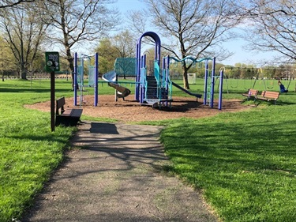
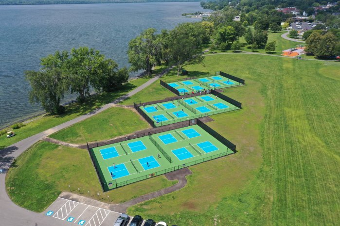

Green Lakes State Park

Green Lakes State Park in Syracuse is renowned for its stunning glacial lakes—Green Lake and Round Lake—nestled within upland forest. These two lakes are meromictic, meaning their deep waters don’t mix with surface waters during fall and spring. This unique condition creates oxygen-free zones in the depths, preserving layers of sediment that offer valuable records of ancient plant and animal life, making the lakes some of the most studied of their kind in the world. Formed during the Ice Age, the lakes are believed to be remnants of giant plunge pools carved by massive waterfalls. Nearly half of the water feeding the lakes flows through surrounding bedrock rich in sulfur, calcium, and magnesium. This causes annual “whiting” events—mineral crystallites forming in the water—that give Green Lake its vibrant, striking color.
Activities
Green Lakes features 15-miles of trails through old growth forests that can be used for hiking, snowshoeing, and cross-country skiing! A 12-whole golf course sits on Green Lakes State Park – overlooking both Green and Round Lake. During warmer months, kayaks are available for rental on Green Lake. Lifeguarded beaches also open during the summer months, with swimming permitted in designated areas. The Education Center – located right on the edge of Green Lake – offers field trips, guided hikes, and more educational opportunities to people of all ages! Camping, Fishing, and Hunting are also popular activities at Green Lakes! See the official New York State Parks Website to get accurate, up-to-date information on current rules and regulationsWildlife
Green Lakes is home to a plethora of fish, most notably Rainbow Trout, Largemouth Bass, Bluegill, and Rock Bass. The Department of Environmental Conservation stocks fish in Green Lakes every spring to increase recreational fishing and restore native species to waters they formerly occupied. Some other animals to watch for at Green Lakes include Canada Geese, Ducks, Great Blue Herons, White-tailed Deer, Woodchucks, Racoons, Red and Gray Foxes, Coyotes, and Minks! Over 170 species of birds have been spotted at Green Lakes! Use this checklist to mark all of the birds that you spot!Conservation Efforts
Green Lakes Bird Conservation Area is a vital sanctuary where diverse bird species—from threatened Northern Harriers to forest breeders like Ovenbirds—find refuge in its unique mix of grasslands, mature forests, and meromictic lakes. Facing threats from invasive plants, woody encroachment, and deer overpopulation, New York State Parks has launched a targeted conservation plan to preserve these habitats by clearing invasive shrubs, mowing grasslands regularly, managing predators, and controlling deer populations—ensuring this critical bird haven continues to thrive for generations to come.Barry Park
Barry Park, nestled in Syracuse’s east side, was officially established in 1945 and named in 1957 after William A. Barry, a Syracuse University engineering alumnus and influential Parks Commissioner who helped shape the city’s recreational landscape. Originally developed to expand green space for growing neighborhoods, the 15-acre park has evolved into a beloved community hub, blending nature, sports, and family-friendly amenities while honoring Barry’s legacy of public service and urban planning vision.
Activities
Barry park features a 1.2 mile trail popular with joggers, dog walkers, and strolling locals. Four soccer fields welcome players of all levels, from youth leagues to casual pick-up games, making Barry Park a lively hub for community soccer. A baseball diamond is available for little league games and community tournaments. Barry Park also has two tennis courts open dawn till dusk regularly maintained for community needs. A full-sized basketball court remains available to the public year-round.Wildlife
Barry Park hosts a variety of native, non-invasive species that reflect its urban biodiversity. Common sightings include the American Robin and Northern Cardinal, both familiar songbirds that thrive in park habitats. You’ll also find Eastern Gray Squirrels and Monarch Butterflies, which contribute to the park’s ecological balance and seasonal charm. These species highlight Barry Park’s role as a welcoming green space for wildlife in the heart of Syracuse.Conservation Efforts
There are no government-sanctioned conservation efforts in Barry Park currently. However, through volunteer-led initiatives, the Barry Park Association promotes environmental stewardship, organizes clean-up events, advocates for park improvements, and fosters neighborhood engagement. Their mission centers on making Barry Park a safe, welcoming place for recreation, nature appreciation, and community connectionLake Onondaga
Onondaga Lake, sacred to the Onondaga Nation as the ancestral heart of the Haudenosaunee Confederacy and birthplace of the Great Law of Peace, has a rich Native American heritage spanning over a thousand years. Once a bustling 19th-century tourist spot, the lake suffered severe pollution from industrial waste and sewage, leading to swimming bans by 1940 and fishing restrictions by 1970. Lake Onondaga became known as “the most polluted site in the country.” Designated a federal Superfund site in 1994, extensive cleanup efforts by Honeywell and Onondaga County—including dredging, improved wastewater treatment, and runoff control—have restored the lake to its cleanest state in over a century. Today, Onondaga Lake supports more than 65 fish species and is reclaiming its role as a cherished natural and cultural resource, bridging its profound indigenous legacy with modern environmental renewal.